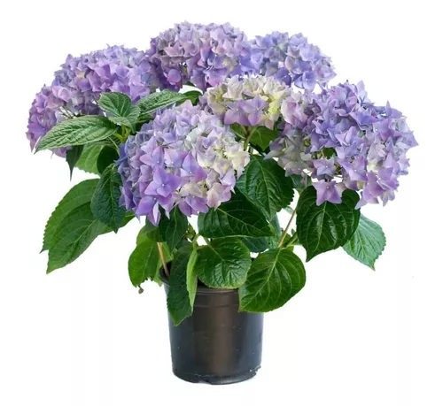
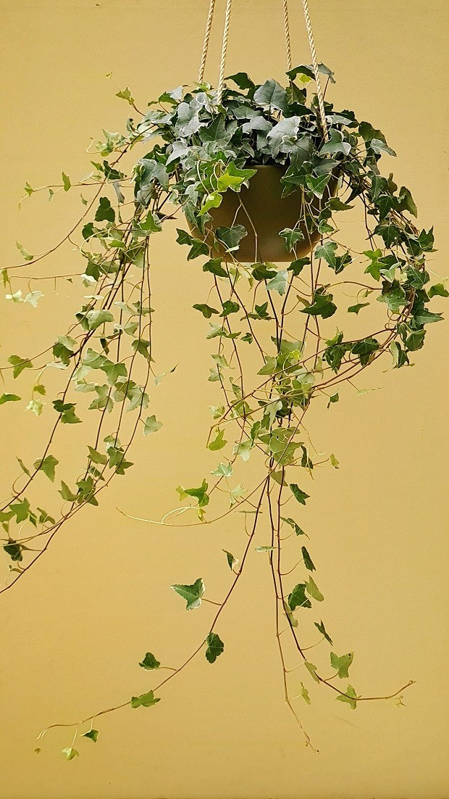

Hortênsia
Hidragea Macrophylla
A hortênsia é uma planta envolta em várias crenças populares. Presentear alguém com hortênsias simboliza amor verdadeiro e gratidão, enquanto têlas em casa sugere felicidade e harmonia. Acredita-se também que possuem propriedades protetoras, afastando energias negativas, além de promoverem equilíbrio e renovação. Essas crenças variam conforme a cultura, mas refletem o fascínio duradouro que as hortênsias têm sobre as pessoas.
Rosas do deserto
Adenium swazicum

As rosas do deserto, também conhecidas com Adenium, são cercada pro diversas crenças populares. Consideradas símbolos de prosperidade e proteção, acredita-se que essa flores tragam abundância e afastem energias negativas. Presenteá-las simboliza desejo por fertilidade e amor duradouro. Sua resiliência em condições adversas as torna também ícones de superção, enquanto sua beleza inspira admiração e elegância. Essas crenças refletem o fascínio duradouro que as rosas do deserto exercem sobre as pessoas.
Maranta cinza
Ctenanthe setosa (Roscoe) Eichler

As crenças populares associadas à maranta cinza incluem sua capacidade de proteção e purificação do ambiente, sua conexão espiritual com a natureza e o divino, e sua associação com equilíbrio e harmonia. Embora não tão difundiadas como outras plantas, essas percepções refletem a aprecição por suas qualiadade estéticas e tranquilizadoras.
Túlipa azul
Túlipa sylvestris

A túlipa azul é uma flor envolta em crenças populares. Sua raridade e unicidade a tornam um símbolo de especialidade, enquanto sua cor azul transmite confiança e serenidade. Em algumas culturas, é vista como um símbolo de espiritualidade e esperança, representando renovação e novos começos na primavera. Essa crenças refletem a beleza e o significado profundo associados às tulipas azuis.
Hera
Hedera helix
As heras são plantas rodeadas por várias crenças populares. Considera-se que ter uma hera em cas traz proteção e boa sorte, além de estabelecer uma conexão com o mundo espiritual. Sua natureza perene simboliza a eternidade, enquanto em algumas culturas é associada ao amor duradouro e à fidelidade. Essas crenças refletem o encanto e a admiração que as heras despertam ao longo do tempo.